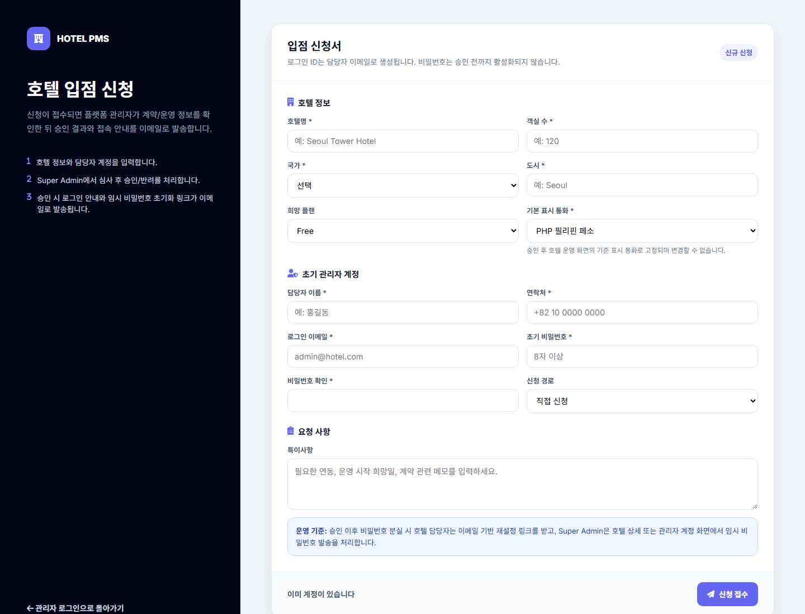

회원가입 화면은 일반 사용자 가입이 아니라 호텔 입점 신청 흐름입니다. 호텔 기본 정보, 사업자 정보, 담당자 정보, 초기 관리자 정보를 입력하고 약관에 동의한 뒤 신청을 제출합니다.

화면 번호별 입력 항목 설명
1
입점 신청 안내
신청자가 어떤 정보를 입력해야 하는지 안내하는 영역입니다.
- 호텔 PMS 이용을 위한 신청 화면임을 설명합니다.
- 신청 후 관리자 승인 절차가 있음을 안내합니다.
- 일반 고객 회원가입과 혼동되지 않도록 문구를 확인합니다.
2
신청 상태 배지
현재 신청이 신규 접수인지, 검토 중인지, 승인 또는 반려 상태인지 표시합니다.
- 신규 작성 단계에서는 신규 신청으로 표시합니다.
- 관리자가 검토하면 상태가 변경될 수 있습니다.
- 상태 값은 관리자 신청 목록과 연결되는 데이터입니다.
3
호텔 기본 정보
호텔명, 대표 연락처, 주소 등 PMS에 등록될 기본 호텔 정보를 입력합니다.
- 호텔명은 시스템 상단과 관리자 화면에서 사용됩니다.
- 연락처와 주소는 계약 및 운영 연락 기준 정보입니다.
- 필수값이 비어 있으면 신청 제출을 제한하는 것이 좋습니다.
4
담당자/연락처 정보
입점 신청과 초기 세팅을 협의할 호텔 담당자 정보를 입력합니다.
- 담당자명, 이메일, 전화번호를 입력합니다.
- 승인 과정에서 보완 요청이 필요한 경우 이 연락처를 사용합니다.
- 초기 관리자 계정 정보와 담당자 정보가 같은지 확인합니다.
5
사업자 정보
계약과 정산 기준이 되는 사업자 정보를 입력합니다.
- 사업자명, 등록번호, 사업장 주소를 입력합니다.
- 정산, 세금계산서, 계약서 기준 정보로 활용됩니다.
- 데이터 형식 검증이 필요한 항목입니다.
6
초기 관리자 정보
승인 후 최초로 호텔 PMS에 로그인할 관리자 계정 정보를 입력합니다.
- 관리자 이름과 로그인 이메일을 입력합니다.
- 승인 후 임시 비밀번호 또는 계정 활성화 메일을 발송합니다.
- Admin 계정은 호텔별 1명만 운영하는 정책을 권장합니다.
7
약관 및 개인정보 동의
서비스 이용 약관, 개인정보 처리, 운영 정책에 대한 동의를 받는 영역입니다.
- 필수 약관은 모두 동의해야 신청 제출이 가능합니다.
- 개인정보 수집 항목과 이용 목적을 명확히 안내해야 합니다.
- 동의 일시와 IP 등 감사 로그 저장 대상입니다.
8
신청 제출
입력한 정보를 검증한 뒤 입점 신청을 접수합니다.
- 필수 입력값 누락 여부를 확인합니다.
- 제출 후에는 신청번호와 접수 일시를 안내합니다.
- 관리자 승인 전까지는 수정 요청 또는 보완 요청이 가능해야 합니다.
검색 결과가 없습니다. 다른 키워드로 다시 검색해 주세요.
권장 접수 흐름
1. 신청 정보 입력호텔, 사업자, 담당자, 초기 관리자 정보를 입력합니다.
2. 필수값 검증연락처, 이메일, 사업자 정보 형식을 확인합니다.
3. 관리자 검토Super Admin이 신청 내용을 확인하고 승인 여부를 결정합니다.
4. 계정 활성화승인 후 초기 관리자에게 접속 안내를 발송합니다.
회원가입/입점 신청은 운영 데이터 생성 전 단계입니다. 따라서 신청 화면에서는 예약, 객실, 정산 데이터가 아니라 호텔 기본 프로필과 초기 관리자 계정을 정확히 수집하는 것이 핵심입니다.